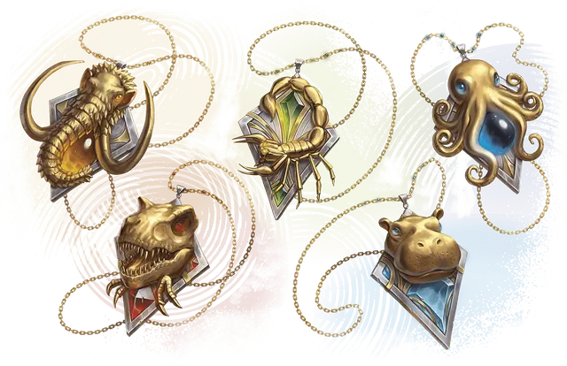

Ошейник звериного фамильяра
Necklace of the Beastly Familiar
Чудесный предмет, редкость варьируется (требуется настройка заклинателем)

Это украшенное ожерелье связано с выполненной в том же стиле подвеской, которую ножет носить ваш фамильяр, и поставляется или находится вместе с ней. Существуют различные подобные наборы, каждый — со своим самоцветом.
Фамильяр. Пока вы носите это ожерелье, вы можете сотворять с его помощью Обретение фамильяра. Как только с помощью ожерелья сотворено это заклинание, его нельзя использовать для сотворения Обретения фамильяра снова до следующего рассвета.
Звериное преображение. Пока ваш фамильяр находится в пределах 60 футов от вас, вы можете действием Магия активировать ожерелье; ваш фамильяр перевоплощается в Зверя на 10 минут. Тип самоцвета в ожерелье определяет, форму какого зверя примет фамильяр (см. таблицу ниже).
Пока ваш фамильяр перевоплощён в зверя, его блок статистики заменяется блоком статистики соответствующего зверя, за исключением его мировоззрения, личности, типа существа, Хитов и Костей хитов. Несомое и носимое фамильяром снаряжение не изменяет размера или формы, и всё снаряжение, не подходящее новой форме, падает наземь.
Ваш фамильяр получает Временные хиты в количестве, равном количеству Хитов соответствующего Зверя. Если эти Временные хиты сохраняются в любом количестве на момент окончания перевоплощения, они исчезают. Если у фамильяра не остаётся этих Временных хитов, перевоплощение немедленно оканчивается.
| Самоцвет | Редкость | Зверь |
| Азурит | Необычный | Гигантский осьминог |
| Хризопраз | Редкий | Гигантский скорпион |
| Циркон | Редкий | Гиппопотам |
| Топаз | Очень редкий | Мамонт |
| Огненный опал | Легендарный | Тираннозавр рекс |